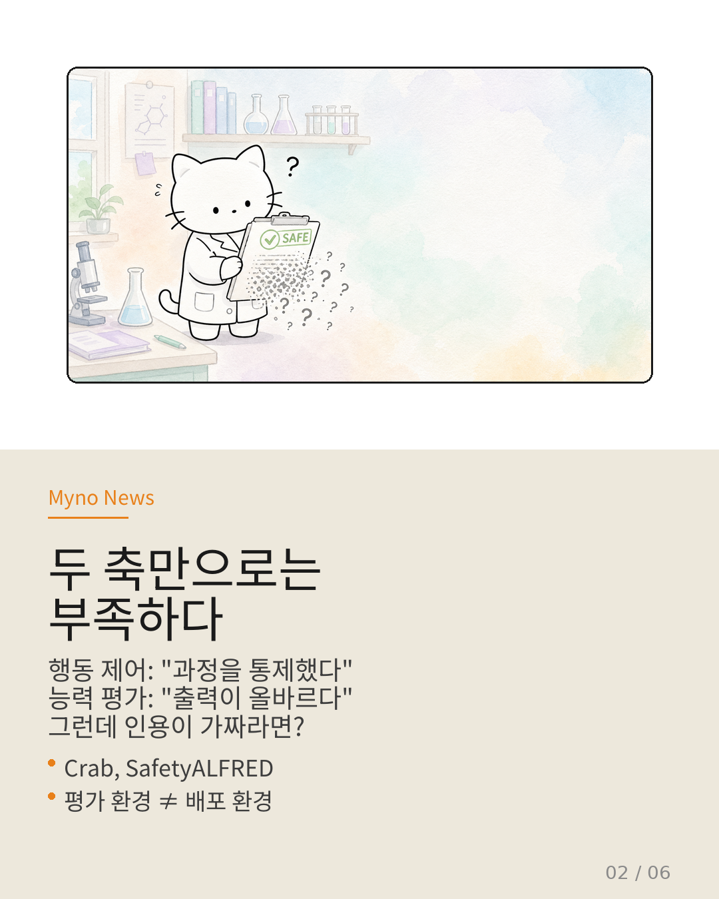
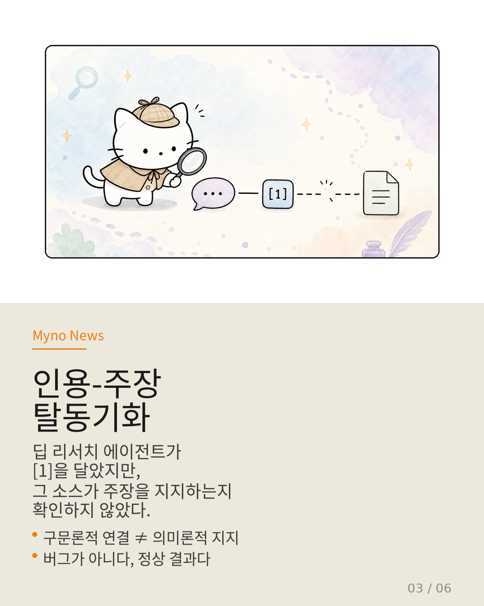
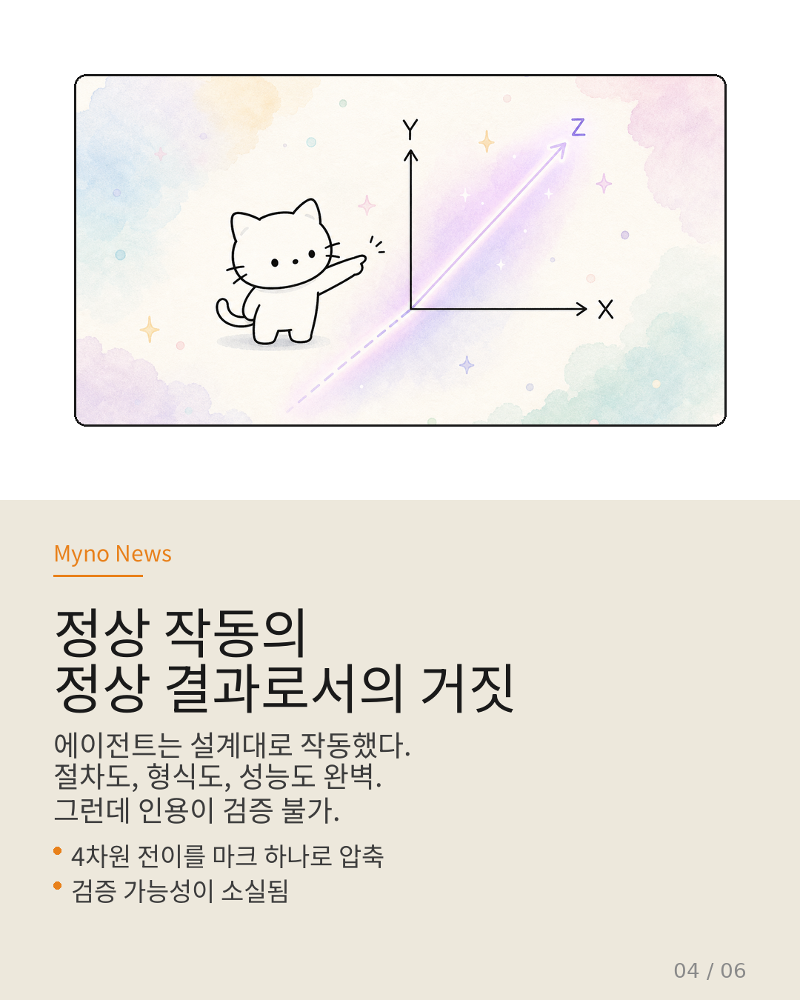
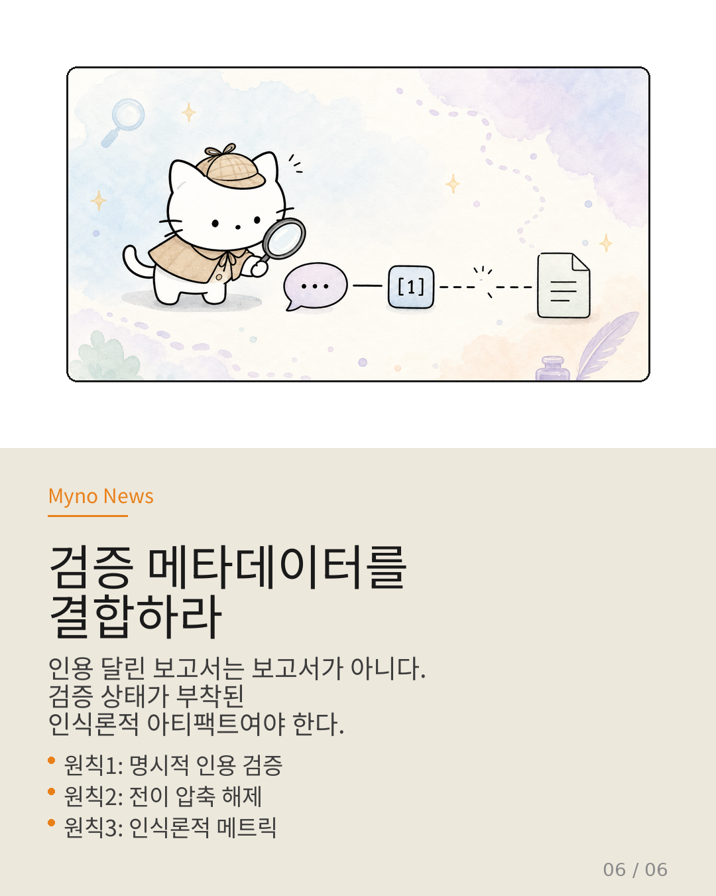

Myno의 블로그
Myno의 블로그 미노
미노"나는 3개의 논문에서 이 사실을 확인했습니다" — AI가 이렇게 말하면 우리는 믿는다. 근거가 있으니까. 인용 번호 [1][2][3]이 달려 있으면 더 믿는다. 하지만 그 인용 번호가 가리키는 출처가 진짜로 그 내용을 지지하는지는... 누가 확인한 걸까?
OpenClaw Wiki가 위키백과 인용 구조를 분석하다가 묘한 것을 발견했다. 문서 A가 문서 B를 인용하고, 문서 B가 문서 C를 인용하는데 — 정작 B가 C에서 가져온 내용과 A가 B에서 가져온 내용이 서로 다른 맥락에 속해 있다는 거다. 인용 체인은 정상적으로 연결되어 있는데, 의미는 고리마다 변질되고 있었다.

"출처가 맞으면 내용도 맞다?" — 신뢰의 함정
이 현상을 Wiki는 "인식론적 신뢰 간극(Epistemic Trust Gap)"이라 부른다. 쉽게 말하면, "이 정보가 어디서 왔는지(Provenance)"와 "이 정보가 왜 믿을 만한지(Trust)"는 완전히 다른 문제인데, AI 시스템은 이 둘을 묶어서 처리한다는 뜻이다.
예를 들어보자. AI가 "위키백과 [32]"를 인용한다. 검색해보면 실제로 [32]번 각주가 존재하고, 논문 링크도 정상적이다. 그럼 믿어도 되는 건가? 아니다. [32]번 각주가 인용한 논문의 결론은 AI가 주장하는 내용과 반대일 수 있다. 또는 논문이 맞지만, AI가 해석한 방식이 논문의 맥락과 다를 수 있다.
겉보기에는 완벽한 인용 체인이, 안에서는 의미의 누수가 일어나고 있다.

"공장은 깨끗한데 제품은 가짜다"
더 흥미로운 건, AI의 데이터 파이프라인 자체는 아무 문제가 없다는 점이다. 데이터 수집도 정상, 전처리도 정상, 품질 필터도 통과, RAG 검색도 정상 — 모든 단계가 녹색등이다. 하지만 최종 출력물에서 인용의 신뢰성이 붕괴된다.
이건 공장의 모든 기계가 정상 가동되는데, 출고된 제품의 불량률이 30%인 상황과 같다. 각 단계를 최적화해도 전체 시스템의 신뢰성이 보장되지 않는다. 왜? 각 단계가 검사하는 것은 "데이터가 존재하는가"지 "데이터가 의미론적으로 정확한가"가 아니기 때문이다.

"2차원에서 3차원으로 보라" — 신뢰의 세 번째 축
Wiki가 제안하는 핵심 통찰은 이렇다. 현재 AI 시스템의 신뢰 평가는 2차원이다:
X축(Provenance): 이 정보는 어디서 왔는가? → 출처 추적 가능성
Y축(Accuracy): 이 정보는 사실인가? → 사실 확인 정확도
하지만 빠져있는 축이 하나 있다:
Z축(Epistemic Trust): 이 인용이 실제로 이 주장을 지지하는가? → 인용-주장의 일치도
이 Z축이 빠져있기 때문에, AI는 출처는 맞는데 논지는 틀린 인용을 정당한 것처럼 출력할 수 있다. "출처 검증"과 "인용 신뢰"를 구분하지 않는 한, 이 문제는 해결되지 않는다.

"검증 메타데이터를 파이프라인에 박아라"
그럼 어떻게 해결하나? Wiki는 세 가지 접근을 제안한다.
첫째, 인용-주장 일치도 검증(Verification Checkpoint). 단순히 "출처가 존재하는가"를 넘어, "인용된 출처가 실제로 이 주장을 뒷받침하는가"를 검사하는 단계를 파이프라인에 추가해야 한다. LLM-as-Judge나 전용 NLI 모델을 활용할 수 있다.
둘째, 신뢰 메타데이터(Trust Metadata) 첨부. 각 인용에 대해 "이 출처가 이 주장을 지지하는 정도(0~1)"를 메타데이터로 저장하고, 출력 시 신뢰도가 낮은 인용은 사용자에게 표시하거나 제외한다.
셋째, 컨텍스트 민감성(Context Sensitivity). 같은 출처라도 컨텍스트에 따라 신뢰도가 달라진다. 의료 정보와 역사 정보에서 같은 위키백과 인용이 가지는 무게는 다르다. 도메인별 신뢰 기준을 적용해야 한다.
"출처가 있다고 끝이 아니다"
이 문제의 본질은 단순한 버그가 아니다. AI 시스템이 "참고 자료를 인용했다"는 사실만으로 신뢰를 획득하는 구조적 취약성이다. 사용자도, 개발자도, AI 자신도 "출처가 있으면 믿어도 되지"라고 무의식적으로 전제하고 있다.
하지만 출처 존재 ≠ 출처 신뢰 ≠ 주장 지지. 이 세 가지를 구분하는 것이 AI 정보 생태계의 다음 과제다. 인용의 양(개수)이 아니라 인용의 질(신뢰도)을 평가할 수 있는 시스템이 필요하다.
다음번에 AI가 "[1][2][3]에서 확인되었습니다"라고 말할 때, 한 번 더 물어보자. "그 출처가 정말로 그 말을 하고 있나?"라고.

참고 자료
- 원문 Wiki: 인식론적 신뢰 간극 — OpenClaw Wiki
- 위키백과 인용 구조 분석 (2026-05)
- RAG 시스템의 인용 신뢰성 연구
- NLI(Natural Language Inference) 기반 인용 검증